| 日付 | 2023年1月2日（月） |
|---|---|
| メンバー | 家族（長女・11歳、長男・9歳、母、姉一家） |
| アクセス | 車 |
鹿が見たいという娘のリクエストに応えて久々の東大寺。
正直、ただの寺社では子供たちは退屈で、
もう毎回東大寺でも良いのかも。
駐車場に車を停めるのに一苦労。
見込んでいた奈良登大路自動車駐車場が満車で、
そこから南下したタイムズならまちでようやく停められる。
10時の到着では遅かったようだ。
しばらく歩くと見えてきたのは春日大社の一の鳥居。ただの鳥居に見えるが重要文化財だ。

人の流れに沿って参道を歩く。

早速、鹿を発見。テンションが上がる。
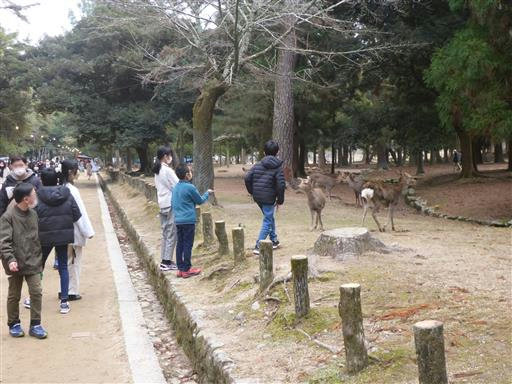
近くに鹿せんべいが売っているので2つ購入。
買っている途中で、すでに大きな鹿が寄ってくる。
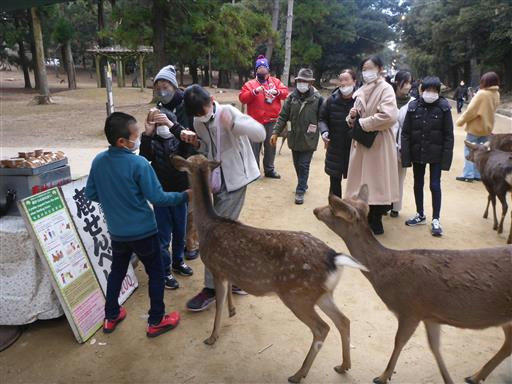
小鹿も遠慮がちにやって来る。小鹿は可愛い。
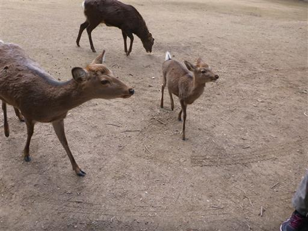
すごい圧力。
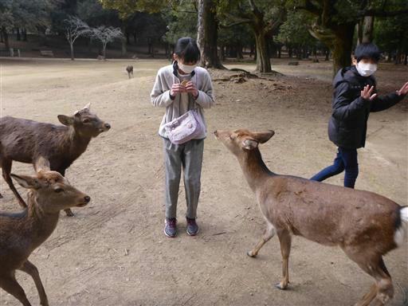
キックしたり服をくわえたりするので、投げてあげる方針に変更。
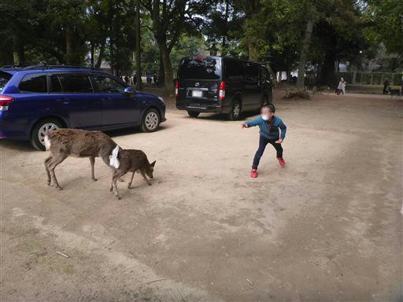
ドングリを食べている鹿もいる。観光客が少なくてお腹がすいているのだろうか？
7年前に来た時は、鹿せんべいに見向きもしない鹿が多くいたのに…
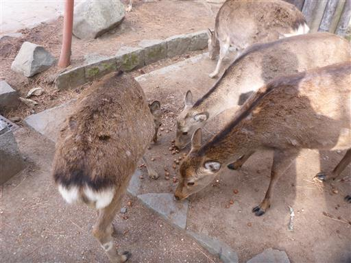
春日大社の参道から離れて東大寺に向かう。
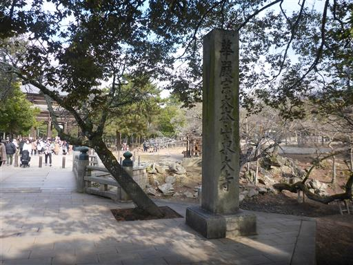
遠くに見える若草山。若草山にも行ってみたいが、母の足が悪いので難しそうだ。
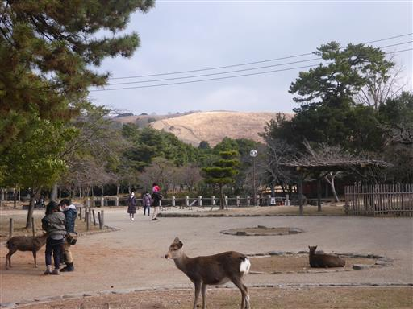
東大寺の石碑。周囲は鹿に占拠されている。
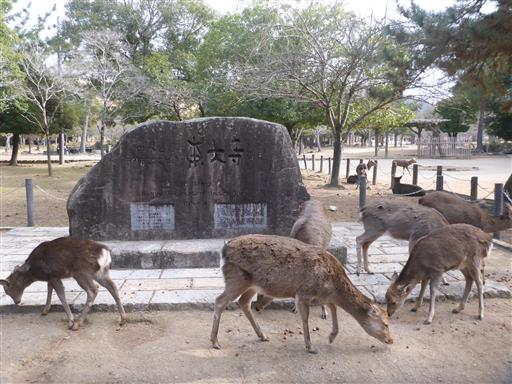
国宝の南大門。とにかく巨大な門だ
中の金剛力士像は非常に迫力がある。
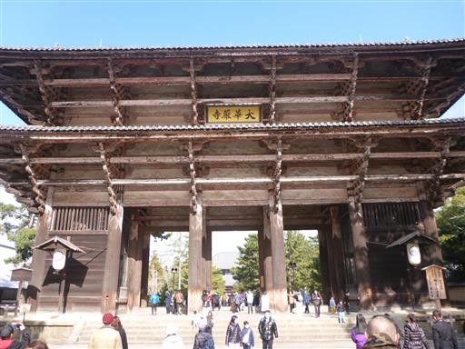
その先にある中門。中門から先が有料ゾーンだ。
入場料は600円で、法隆寺に比べると良心的だ。
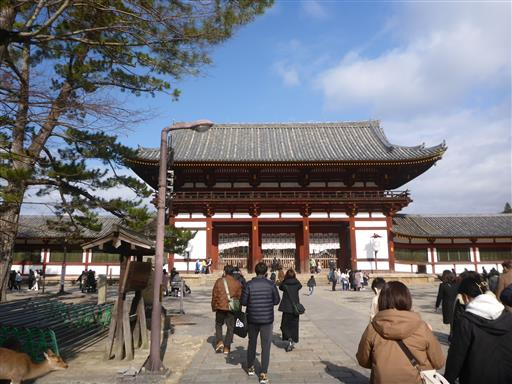
大仏殿。こちらも立派。
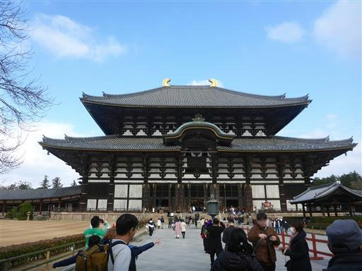
そして、有名な奈良の大仏。
この建物内は写真撮影OKだ。禁止の場所が多いのだが、結構珍しい。
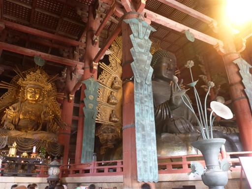
大仏も巨大だが、内部の空間も巨大だ。柱が太い。
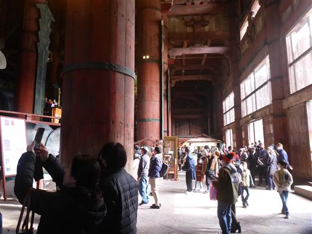
柱の穴を潜れる場所は、新型コロナの影響で閉鎖されている。残念。
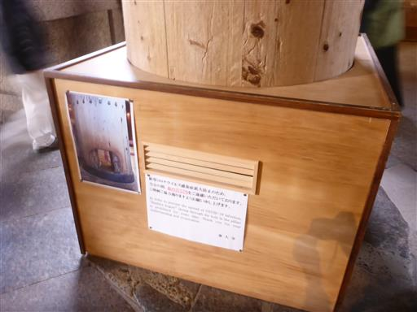
「チャイナダイニング飛天」で昼食をとり、食べ足りなかった人は「中谷堂」でよもぎ餅を食べる。
母親は足が悪いなりに頑張って歩いたし、子供達も鹿に会えて喜んでいたしで、
楽しい初詣だった。
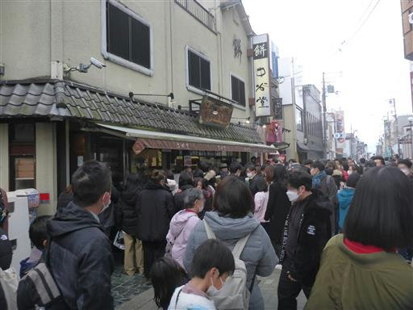